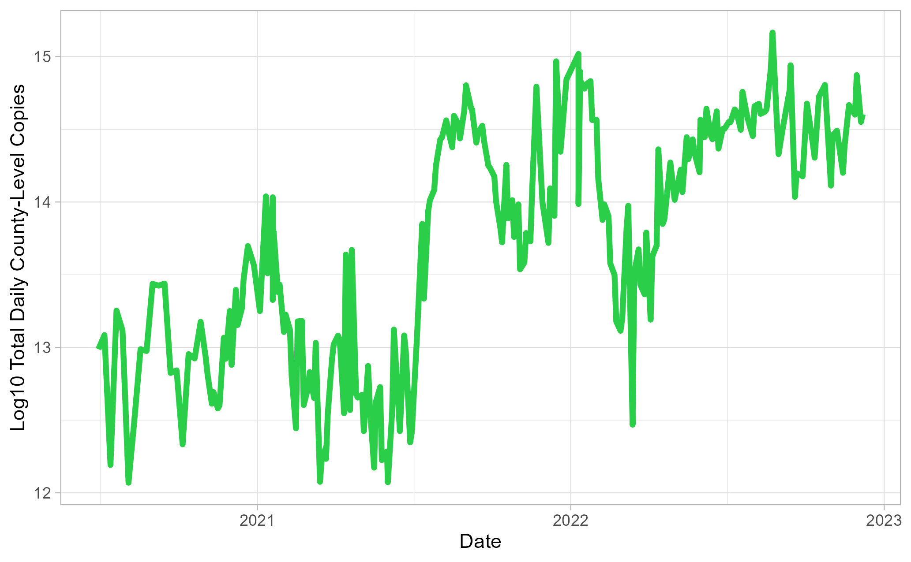
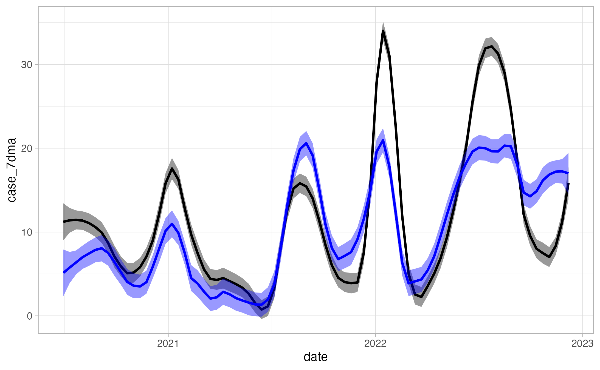

Wastewater Surveillance for SARS-CoV-2 Data Analysis Project
1 Abstract
Infection by Severe Acute Respiratory Syndrome Coronavirus 2 (SARS-CoV-2), causing COVID-19, is followed by the shedding of viral particles by multiple excretory functions, including stool and urine production. Subsequently, these viral particles can be detected in wastewater influent via RNA extraction, followed by Reverse Transcriptase Quantitative Polymerase Chain Reaction (RT-qPCR) utilizing SARS-CoV-2 specific primers. Wastewater-based detection methods have been utilized across the globe as an independent and parallel indicator of SARS-CoV-2 viral prevalence and, depending on community-specific factors, as a leading indicator of clinical case trends. WBE methods may also become a primary tool in understanding transmission dynamics as case under-reporting increases.
2 Introduction
2.1 General Background Information
At the time of writing it has been three years since the COVID-19 Pandemic was declared, followed by a lockdown across the globe. To date, the World Health Organization reports over 760 million confirmed cases and 6.9 million deaths globally (WHO Coronavirus (COVID-19) Dashboard, n.d.). The causative agent, severe acute respiratory syndrome coronavirus-2 (SARS-CoV-2), is a positive-sense single-stranded RNA zoonotic virus that infects cells via its spike proteins or “crowns” (V’kovski, Kratzel, Steiner, Stalder, & Thiel, 2021). When infected by this airborne pathogen, people report experiencing a wide range of mild to severe symptoms, including shortness of breath, cough, head and body aches, and loss of taste or smell. Older adults and others with underlying issues are at higher risk of experiencing more severe outcomes, including death (“COVID-19 and Your Health,” 2020). However, long-term effects of COVID-19 on the body are not well understood yet and it may be years before enough research has been done to well-characterize these impacts. The effects of this pandemic have been far-reaching, with influence practically in every aspect of society, indicating a need to keep a close eye on this infectious disease. However, as the pandemic progresses, clinical reporting continues to dwindle, leaving researchers needing a better means of collecting data on the spread of the virus.
Early on in the pandemic, wastewater-based epidemiology (WBE) was identified as a promising method for detection of SARS-CoV-2 in a population. This is due to the ability of SARS-CoV-2 particles to shed from the body during and after infection through excretory functions, namely stool production (Wu et al., 2020). Viral particles in wastewater are able to be detected via Reverse Transcriptase Quantitative Polymerase Chain Reaction (RT-qPCR) by amplification of universally-conserved gene targets on the SARS-CoV-2 genome (Ahmed et al., 2020). The use of universal targets allows for the detection of the virus regardless of what variant is present. As of writing, over 4,000 sites worldwide have contributed to wastewater monitoring of SARS-CoV-2 (COVIDPoops19, n.d.). Not only is WBE an effective way of detecting viral presence, but quantification of wastewater viral load has been shown to correlate strongly with COVID-19 clinical cases when reporting efforts were strong, indicating the potential for it to be used as an alternative disease monitoring method.
Paragraph 3: Surveillance program background. Aims, County-level parallel analysis of wastewater surveillance data and reported clinical cases
2.2 Description of data and data source
SARS-CoV-2 wastewater surveillance data
Sample collection for wastewater surveillance began June 30, 2020 and occurred twice weekly (excluding major holidays) through December 21, 2022. Raw wastewater influent was collected from three Wastewater Treatment Plants in Athens-Clarke County and viral RNA was extracted. RT-qPCR was used to calculate the cycle threshold (Ct) value of each reaction, which is used to estimate SARS-CoV-2 copies per liter of wastewater in the data cleaning process (Section 3.2).
Wastewater treatment plant data
Wastewater influent flow data, including millions of gallons per day (MGD) and total suspended solids (TSS), were collected for each corresponding sampling date.
COVID-19 clinical data
COVID-19 clinical data were obtained from the Georgia Department of Public Health website (“COVID-19 Status Report,” n.d.) which includes COVID-19 reported clinical case data for the state of Georgia. These data include reported cases, demographics, comorbidities, deaths, and more. However, not all data is necessary for analysis and will be subset to include only symptom onset, positive case, and administered test data for Clarke County. (Section 3.2).
2.3 Hypotheses to be addressed
This study aims to conduct a parallel analysis between SARS-CoV-2 wastewater surveillance data and reported COVID-19 clinical case data in Athens-Clarke County, Georgia. It is expected that wastewater quantifications and reported case data will have a positive linear relationship. It is also hypothesized that certain wastewater-clinical relationships will be stronger than others, see Table 1 for variables of interest.
3 Methods
3.1 Data acquisition
Wastewater surveillance data
24-hour composite raw wastewater influent samples were collected twice-weekly from three treatment facilities in Clarke County and stored at 4°C until ready for extraction. 280 𝜇L of wastewater in replicates (n=6) was aliquoted and direct RNA extraction (Zymo Research, R2042) was performed on the same day as sample collection.Each extraction replicate was reverse transcribed and amplified using RT-qPCR and a SARS-CoV-2 specific primer-probe panel (IDT, 10006713), done in technical replicates (n=3). As part of the qPCR panel, two gene targets on the N-gene of the SARS-CoV-2 genome were used for amplification. The N1 and N2 gene targets were chosen due to their conservation across variants and act as universal detectors of the virus [@]. Cycle threshold (Ct) values were then calculated for each PCR reaction, which were then used to estimate SARS-CoV-2 viral load (See Section 3.2 for more detail).
Wastewater treatment plant data
For each treatment plant and collection date, MGD and TSS was shared by plant operators directly with our team and compiled throughout the study period.
COVID-19 clinical data
Reported case and testing data were downloaded from Georgia Department of Public Health’s COVID-19 Status Report Page in January 2023.
3.2 Data import and cleaning
Calculating wastewater qPCR assay positivity
qPCR assay positivity was determined for each collection date by finding the proportion of assays that detected SARS-CoV-2 out of the total number of assays performed. This includes all biological and technical replicate assays that were performed for a given sampling date. County-level assay positivity data was then combined with county-level viral load data.
Adding COVID-19 clinical data
Of the downloaded Georgia DPH data, the data set containing positive case counts was retained. Of these data, daily reported case counts and case seven-day moving average were kept for analysis. These data were then subset to include only data from Clarke County collected during the surveillance period and combined with wastewater data.
3.3 Statistical analysis
Through exploration of time series and wastewater-clinical correlations, prominent relationships were identified for further analysis. Wastewater variables were used to train linear regression models to predict clinical observations. Model performance metrics (RSQ and RMSE) were assessed against each other and against a null model. Cross-validation was used to validate performances. The best model was then determined and used to predict values in a new set of data.
4 Results
4.1 Time-series analysis

4.2 Correlation analysis
Two wastewater and two clinical case metrics were identified as features of interest during exploratory analysis steps where stronger wastewater-clinical correlations were observed between these variables than in others. These include wastewater viral load, wastewater assay positivity rate, clinical case seven-day moving average, and test administration positivity rate (Table 1).
| Overall (N=224) |
|
|---|---|
| Log10 Viral Load | |
| Mean (SD) | 13.7 (0.807) |
| Median [Min, Max] | 13.9 [12.1, 15.2] |
| Assay Positivity | |
| Mean (SD) | 43.8 (32.3) |
| Median [Min, Max] | 39.3 [0, 99.1] |
| Clinical Case Seven-Day Moving Average | |
| Mean (SD) | 11.7 (9.13) |
| Median [Min, Max] | 9.35 [0.200, 34.7] |
| Daily Reported Clinical Cases | |
| Mean (SD) | 44.5 (62.4) |
| Median [Min, Max] | 25.0 [0, 365] |
| PCR Test Positivity | |
| Mean (SD) | 10.3 (9.16) |
| Median [Min, Max] | 7.16 [0, 40.6] |
Table 1. Statistics on clinical and wastewater variables of interest
4.3 Model analysis

5 Discussion
5.1 Summary and Interpretation
Summarize what you did, what you found and what it means.
5.2 Strengths and Limitations
Discuss what you perceive as strengths and limitations of your analysis.
5.3 Conclusions
What are the main take-home messages?